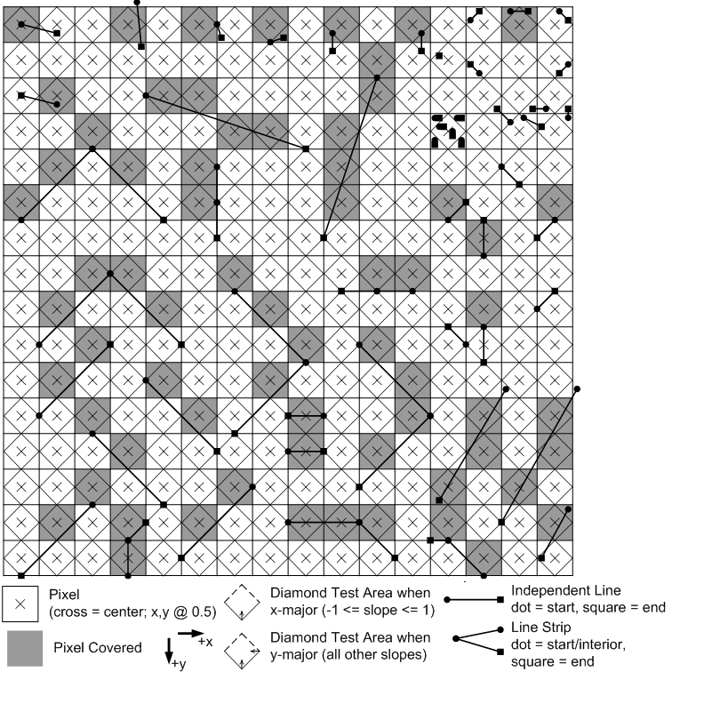

Rasterization rules define how vector data is mapped into raster data. The raster data is snapped to integer locations that are then culled and clipped (to draw the minimum number of pixels), and per-pixel attributes are interpolated (from per-vertex attributes) before being passed to a pixel shader.
There are several types of rules, which depend on the type of primitive that is being mapped, as well as whether or not the data uses multisampling to reduce aliasing. The following illustrations demonstrate how the corner cases are handled.
Any pixel center which falls inside a triangle is drawn; a pixel is assumed to be inside if it passes the top-left rule. The top-left rule is that a pixel center is defined to lie inside of a triangle if it lies on the top edge or the left edge of a triangle.
Where:
The top-left rule ensures that adjacent triangles are drawn once.
This illustration shows examples of pixels that are drawn because they either lie inside a triangle or follow the top-left rule.
The light and dark gray covering of the pixels show them as groups of the pixels to indicate which triangle they are inside.
Line rasterization rules use a diamond test area to determine if a line covers a pixel. For x-major lines (lines with -1 <= slope <= +1), the diamond test area includes (shown solid) the lower-left edge, lower-right edge, and bottom corner; the diamond excludes (shown dotted) the upper-left edge, upper-right edge, the top corder, the left corner, and the right corner. A y-major line is any line that is not an x-major line; the test diamond area is the same as described for the x-major line except the right corner is also included.
Given the diamond area, a line covers a pixel if the line exits the pixel's diamond test area when traveling along the line from the start towards the end. A line strip behaves the same, as it is drawn as a sequence of lines.
The following illustration shows some examples.

An antialiased line is rasterized as if it were a rectangle (with width = 1). The rectangle intersects with a render target producing per-pixel coverage values, which are multiplied into pixel shader output alpha components. There is no antialiasing preformed when drawing lines on a multisampled render target.
It is deemed that there is no single "best" way to perform antialiased line rendering. Direct3D 10 adopts as a guideline the method shown in the following illustration. This method was derived empirically, exhibiting a number of visual properties deemed desirable. Hardware need not exactly match this algorithm; tests against this reference shall have "reasonable" tolerances, guided by some of the principles listed further below, permitting various hardware implementations and filter kernel sizes. None of this flexibility permitted in hardware implementation, however, can be communicated up through Direct3D 10 to applications, beyond simply drawing lines and observing/measuring how they look.
This algorithm generates relatively smooth lines, with uniform intensity, with minimal jagged edges or braiding. Moire patterning for close lines is minimized. There is good coverage for junctions between line segments placed end-to-end. The filter kernel is a reasonable tradeoff between the amount of edge blurring and the changes in intensity caused by gamma corrections. The coverage value is multiplied into pixel shader o0.a (srcAlpha) per the following formula by the output-merger stage: srcColor * srcAlpha + destColor * (1-srcAlpha).
A point is interpreted as though it were composed of two triangles in a Z pattern, which use triangle rasterization rules. The coordinate identifies the center of a one pixel wide square. There is no culling for points.
The following illustration shows some examples.

Multisample antialiasing (MSAA) reduces geometry aliasing using pixel coverage and depth-stencil tests at multiple sub-sample locations. To improve performance, per-pixel calculations are performed once for each covered pixel, by sharing shader outputs across covered sub-pixels. Multisample antialiasing does not reduce surface aliasing. Sample locations and reconstruction functions are dependent on the hardware implementation.
The following illustration shows some examples.

The number of sample locations is dependent on the multisample mode. Vertex attributes are interpolated at pixel centers, since this is where the pixel shader is invoked (this becomes extrapolation if the center is not covered). Attributes can be flagged in the pixel shader to be centroid sampled, which causes non-covered pixels to interpolate the attribute at intersection of the pixel's area and the primitive. A pixel shader runs for each 2x2 pixel area to support derivative calculations (which use x and y deltas). This means that shader invocations occur more than is shown to fill out the minimum 2x2 quanta (which is independent of multisampling). The shader result is written out for each covered sample that passes the per-sample depth-stencil test.
Rasterization rules for primitives are, in general, unchanged by multisample antialiasing, except:
For a triangle, a coverage test is performed for each sample location (not for a pixel center). If more than one sample location is covered, a pixel shader runs once with attributes interpolated at the pixel center. The result is stored (replicated) for each covered sample location in the pixel that passes the depth/stencil test.
A line is treated as a rectangle made up of two triangles, with a line width of 1.4.
For a point, a coverage test is performed for each sample location (not for a pixel center).
Many formats support multisampling (see Hardware Support for Direct3D 10 Formats), some formats can be resolved (ResolveSubresource; which downsamples a multisampled format to a sample size of 1). Multisampling formats can be used in render targets which can be read back into shaders using load, since no resolve is required for individual samples accessed by the shader. Depth formats are not supported for multisample resource, therefore, depth formats are restricted to render targets only.
Typeless formats (R8G8B8A8_TYPELESS for instance) support multisampling to allow a resource view to interpret data in different ways. For instance, you could create a multisample resource using R8G8B8A8_TYPELESS, render to it using a render-target-view resource with a R8G8B8A8_UINT format, then resolve the contents to another resource with a R8G8B8A8_UNORM data format.
The API reports hardware support for multisampling through the number of quality levels. For example, a 0 quality level means the hardware does not support multisampling (at a particular format and quality level). A 3 for quality levels means that the hardware supports three different sample layouts and/or resolve algorithms. You can also assume the following:
By default, vertex attributes are interpolated to a pixel center during multisample antialiasing; if the pixel center is not covered, attributes are extrapolated to a pixel center. If a pixel shader input that contains the centroid semantic (assuming the pixel is not fully covered) will be sampled somewhere within the covered area of the pixel, possibly at one of the covered sample locations. A sample mask (specified by the rasterizer state) is applied prior to centroid computation. Therefore, a sample that is masked out will not be used as a centroid location.
The reference rasterizer chooses a sample location for centroid sampling similar to this:
Pixel shaders always run using a minimum 2x2 pixel area to support derivative calculations, which are calculated by taking deltas between data from adjacent pixels (making the assumption that the data in each pixel has been sampled with unit spacing horizontally or vertically). This is unaffected by multisampling.
If derivatives are requested on an attribute that has been centroid sampled, the hardware calculation is not adjusted, which can cause inaccurate derivatives. A shader will expect a unit vector in render-target space but may get a non-unit vector with respect to some other vector space. Therefore, it is an application's responsibility to exhibit caution when requesting derivatives from attributes that are centroid sampled. In fact, it is recommended that you do not combine derivatives and centroid sampling. Centroid sampling can be useful for situations where it is critical that a primitive's interpolated attributes are not extrapolated, but this comes with tradeoffs such as attributes that appear to jump where a primitive edge crosses a pixel (rather than change continuously) or derivatives that cannot be used by texture sampling operations that derive LOD.
Â
Â